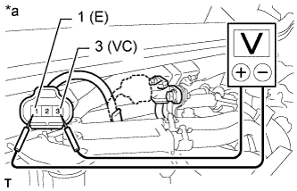
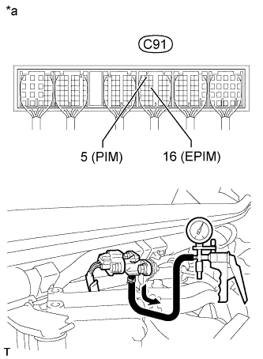
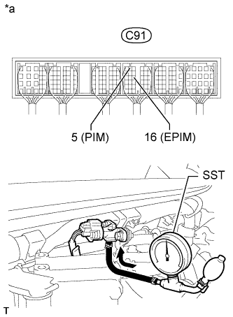

ДАТЧИК АБСОЛЮТНОГО ДАВЛЕНИЯ В КОЛЛЕКТОРЕ (для моделей с DPF) > ПРОВЕРКА БЕЗ СНЯТИЯ С АВТОМОБИЛЯ |
| 1. ПРОВЕРЬТЕ ДАТЧИК АБСОЛЮТНОГО ДАВЛЕНИЯ В КОЛЛЕКТОРЕ |
Проверьте напряжение питания.
Отсоедините разъем датчика абсолютного давления в коллекторе.
|  |
Измерьте напряжение в соответствии со значениями, приведенными в таблице.
| Контакты для подключения диагностического прибора | Положение переключателя | Заданные условия |
| C83-3 (VC) - C83-1 (E) | Зажигание включено | 4,75 - 5,25 В |
| *a | Вид спереди разъема со стороны жгута проводов: (к датчику абсолютного давления в коллекторе) |
Подсоедините разъем датчика абсолютного давления в коллекторе.
Проверьте источник питания.
Установите замок зажигания в положение ON (ВКЛ).
Отсоедините вакуумный шланг от датчика абсолютного давления в коллекторе.
|  |
Измерьте напряжение в соответствии со значениями, приведенными в таблице.
| Контакты для подключения диагностического прибора | Состояние | Заданные условия |
| C91-5 (PIM) - C91-16 (EPIM) | -13,3 кПа (100 мм рт.ст., 3,94 дюйма рт. ст.) | 0,8 - 1,4 В |
| -26,6 кПа (199 мм рт.ст., 7,85 дюйма рт.ст.) | 0,5 - 1,0 В | |
| -40 кПа (300 мм рт.ст., 11,81 дюйма рт.ст.) | 0,3 - 0,9 В |
| *a | Устройство с подсоединенным жгутом проводов (ECM) |
 | Разрежение |
|  |
С помощью SST измерьте напряжение в соответствии со значениями, указанными в таблице ниже.
| Контакты для подключения диагностического прибора | Состояние | Заданные условия |
| C91-5 (PIM) - C91-16 (EPIM) | 19,6 кПа (0,20 кгс/см2, 2,84 фунтов на кв. дюйм) | 1,0 - 1,7 В |
| 39,2 кПа (0,40 кгс/см2, 5,69 фунтов на кв. дюйм) | 1,3 - 1,9 В | |
| 58,8 кПа (0,60 кгс/см2, 8,53 фунтов на кв. дюйм) | 1,5 - 2,2 В | |
| 78,5 кПа (0,80 кгс/см2, 11,4 фунтов на кв. дюйм) | 1,8 - 2,4 В | |
| 98,0 кПа (1,00 кгс/см2, 14,2 фунтов на кв. дюйм) | 2,1 - 2,7 В |
| *a | Устройство с подсоединенным жгутом проводов (ECM) |
| Давление |